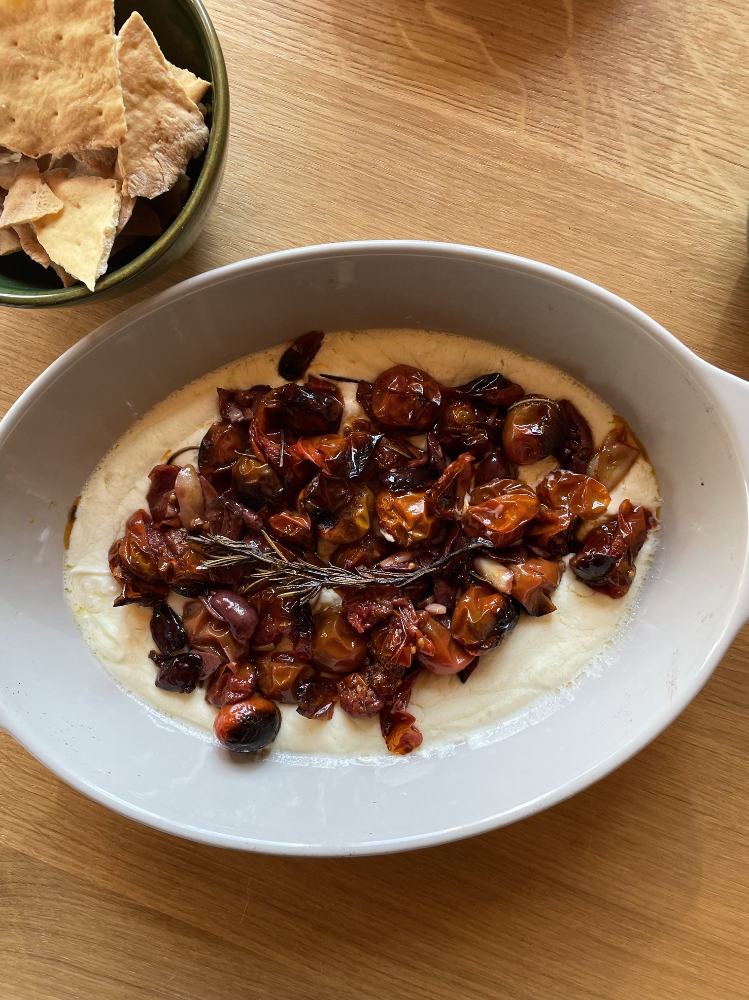

Dip de queso feta con limón y tomates confitados
Ingredients
4×
- 300 g de tomates cherry
- aceite de oliva
- sal
- una rama de romero
- 200 g de feta
- el zumo y la ralladura de 1/2 limón
- pan de pita tostado

Preparación
Paso 1
Confitar 300 g de tomates cherry en una fuente con aceite de oliva abundante, sal y una rama de romero, 30min a 180ºC.
Paso 2
Triturar 200 g de feta con el zumo y la ralladura de 1/2 limón y un poco de aceite hasta que quede cremoso.
Paso 3
Extender la crema de feta en una fuente, poner encima los tomates confitados con su aceite y servir con pan de pita tostado.